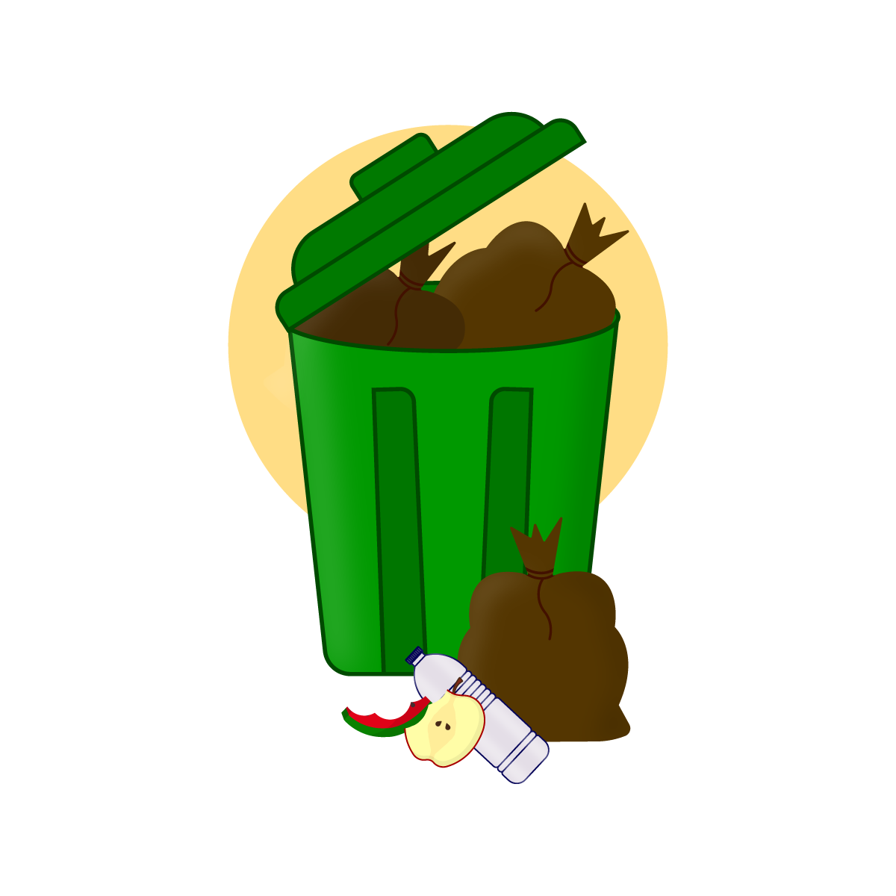
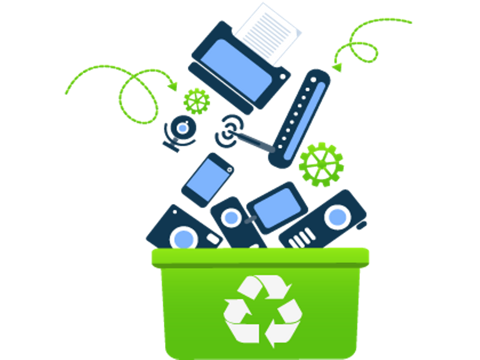

SAMPAH DAUR ULANG
Sampah daur ulang dapat dibagi menjadi kertas, plastik, logam, kaca, dan tekstil yang dapat diproses kembali menjadi bahan baku baru.

SAMPAH DAPUR
Sampah dapur adalah jenis sampah organik yang berasal dari sisa makanan, sayuran, buah-buahan, dan bahan makanan lainnya yang dapat terurai secara alami melalui proses kompos.

SAMPAH BARANG BEKAS
Sampah barang bekas adalah jenis sampah non-organik berupa barang-barang elektronik, perlengkapakan rumah tangga, dan lainnya.